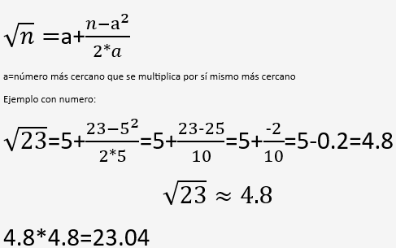

La raíz es la operación contraria de la potencia. Sirve para descubrir qué número multiplicarse por sí mismo una cierta cantidad de veces produce el número original.
En otras palabras, sacar una raíz significa buscar la base que eleve al exponente indicado del valor del radicando .
ejemplo:


Índice: Cantidad de veces que se multiplica la raíz.
Raíz: El resultado de la operación. Es el número que, multiplicado por sí mismo el número de veces que indica el índice, da como resultado el radicando.
Radicando: El número que está debajo del símbolo radical.
Radical: Es el sÍmbolo de la operación matemática.
1.Geometría:Calcula el lado de un cuadrado o la diagonal de una figura
2.Física:Hallar la velocidad o distancia en una fórmula con potencias.
3.Estadística:Medir la variación de datos (desviación estándar).
4.Tecnología o juego:Calcular distancia entre puntos de coordenadas (como videojuegos o mapas)
Las raíces son esenciales porque conectan la matemática con la vida real y permiten calcular valores desconocidos, resolver problemas y comprender mejor las conexiones entre diferentes magnitudes. Gracias a ella, es posible aplicar ese conocimiento matemático en distintos problemas del mundo cotidiano y científico.
El método Newton (o método de Newton-Raphson) es un procedimiento numérico para encontrar una raíz o una solución aproximada de una ecuación matemática.
Ejemplo:
El método de tanteo o de prueba y error se usa para encontrar el valor aproximado de una raíz cúbica, probando diferentes números hasta hallar aquel que, al multiplicarse por sí mismo tres veces, da un resultado cercano a la raíz que estás buscando.
Ejemplo:

Las raíces son un pilar fundamental en la matemática y en otras áreas como la física, la geometría y la estadística, porque te ayudan a encontrar el valor de una cantidad desconocida. Su comprensión permite aplicar un razonamiento matemático en distintos temas y te ayuda a resolver problemas del mundo real.